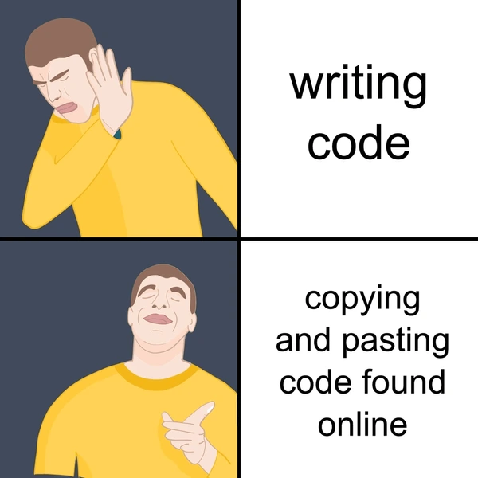

Blogs
Research is a long journey, and recording our thoughts and ideas is always something to celebrate when we look back. Here, I am sharing my technical insights and engineering experiences to help others learn and grow. Alongside these technical posts, I will also be sharing my personal reflections and thoughts on a variety of topics.

Crafting the Perfect Coding Environment
I'll guide you through the essentials of setting up a comfortable and efficient coding environment. We'll dive into configuring Visual Studio Code (VSCode) and explore a selection of must-have plugins.

How to Craft Decent Code
Think of good code like a classic, well-fitting piece of clothing—it never goes out of style. Coding is both a science and an art, where neatness and logic come together.